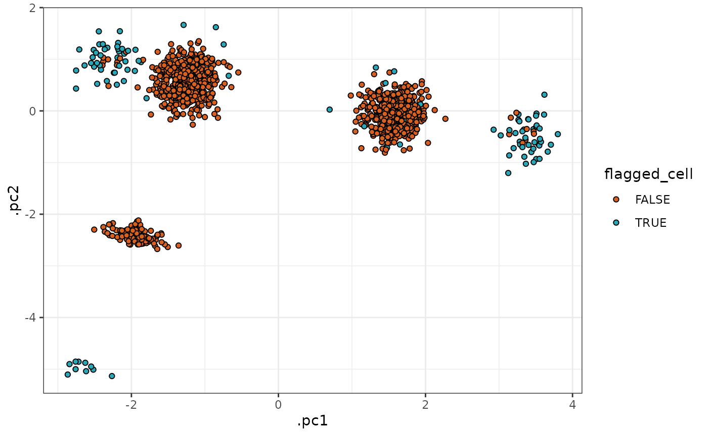

Quality control
Timothy Keyes
2023-05-03
quality-control.RmdAfter high-dimensional cytometry data are collected, you may want to assess the quality of the data to look for channels whose measurements failed, acquisition artifacts, or outlier cells.
To perform such analyses, tidytof provides several functions for quality control that allow users to do the following:
- Detect low-expression (i.e. potentially failed) channels
- Identify time periods of abnormally low or high flow rate during data acquisition (which may include artifacts due to clogs or overlapping measurements)
- Flag cells that are unusually far from the centroid of a cluster/cell population to which they have been assigned
- Flag cells whose assignment to any particular cluster/cell population is ambiguous (i.e. is intermediate between several clusters/cell populations)
Accessing the data for this vignette
To demonstrate how to use {tidytof}’s quality control verbs, we will use a combination of simulated and real data in this vignette. Simulated data will be generated on-the-fly in the sections below, but we will walk through how to download the real dataset in this section.
We want to download a dataset originally collected for the development of the PhenoGraph algorithm. These data are built into in the HDCytoData package, which is available on Bioconductor and can be downloaded with the following command:
if (!requireNamespace("BiocManager", quietly = TRUE)) {
install.packages("BiocManager")
}
BiocManager::install("HDCytoData")To load the PhenoGraph data into our current R session, we can call a
function from the HDCytoData, which will provide it to us
in a format from the {flowCore} package (called a
“flowSet”). To convert this into a tidy tibble, we can use
tidytof built-in method for converting flowCore objects
into tof_tbl’s. We also add a few lines of
dplyr code to clean up the column names and perform the
standard arcsinh transformation.
levine <-
HDCytoData::Levine_32dim_flowSet() |>
as_tof_tbl() |>
# a bit of data cleaning
dplyr::mutate(population_id = as.character(population_id)) |>
dplyr::rename_with(
.fn = \(x) stringr::str_to_lower(stringr::str_remove(x, "\\|.+"))
) |>
dplyr::mutate(dplyr::across(c(file_number, population_id), as.character)) |>
# arcsinh transformation
tof_preprocess(
channel_cols =
c(-time, -cell_length, -event_number, -file_number, -population_id)
)Thus, we can see that levine is a tof_tbl
with 265627 cells (one in each row) and 40 pieces of information about
each cell (one in each column).
Detect low-expression (i.e. potentially failed) channels with
tof_assess_channels()
After data collection, we might wonder which of our channels to include in downstream analyses. In particular, we might want to exclude channels with very few positive values, a situation that indicates that an antibody may have failed, or that signal on a particular channel may have been too weak to be detected.
To do so, we can use tof_assess_channels(), a verb that
calculates how many cells are negative (i.e. below a use-specified
threshold, negative_threshold) in each channel and flags
channels that have more than a user-specified proportion of negative
cells (negative_proportion_flag).
For the levine dataset, we look for markers that have
more than 97.5% of cells below a threshold of 5 ion counts:
# convert 5 counts to asinh value with a cofactor of 5
threshold <- asinh(5/5)
levine |>
tof_assess_channels(
negative_threshold = threshold,
negative_proportion_flag = 0.975
)
#> # A tibble: 38 × 3
#> channel negative_proportion flagged_channel
#> <chr> <dbl> <lgl>
#> 1 cd14 0.988 TRUE
#> 2 cd133 0.975 TRUE
#> 3 cd117 0.969 FALSE
#> 4 cd16 0.967 FALSE
#> 5 flt3 0.960 FALSE
#> 6 cd15 0.940 FALSE
#> 7 cd41 0.923 FALSE
#> 8 cd34 0.909 FALSE
#> 9 cd61 0.890 FALSE
#> 10 cd33 0.885 FALSE
#> # ℹ 28 more rowsWe can see that two channels have more than 97.5% of cells in the dataset below 5 counts. For a given experiment, this might be an expected (i.e. a marker is only expressed on a very rare cell population) or unexpected (a marker should be expressed on many cells). In this case, we can visualize the marker with the most negative cells to manually inspect it (as we would recommend with all flagged channels).
levine |>
tof_plot_cells_density(marker_col = cd14)In this case, it looks like a small population of cells is slightly positive for cd14, but this could simply be measurement noise/nonspecific binding of the antibody. It would be up to user whether or not to include cd14 in downstream analyses.
Identify time periods of abnormally low or high flow rate during
data acquisition using tof_assess_flow_rate()
Large changes in the flow rate of a cytometer can impact the quality of the signal acquired during data collection: for example, abnormally low flow rates can be caused by partial occlusions of a cytometer’s flow cell, leading to debris and air infiltration into the cytometer’s microfluidics system. Thus, it can be useful to perform a quality control step that explicitly interrogates the flow rate over the course of a cytometry experiment in order to flag cells that were collected at unusually high or low rates of acquisition.
To do this, {tidytof} provides tof_assess_flow_rate(), a
function that implements a simplified version of FlowAI’s
flow rate analysis. In short, the relative flow rates for each timestep
of a cytometry experiment are calculated, and outlier timepoints with
particularly high or low flow rates (i.e. those beyond extreme values of
the t-distibution across all timesteps) are flagged. The size of
timesteps is a user-defined parameter of the calculation, as is the
significance level (between 0 and 1) within the t-distribution that
determines how anomalous a time step’s flow rate must be before cells
are flagged.
We can apply tof_assess_flow_rate() to the
levine dataset below, using
levine |>
tof_assess_flow_rate(
time_col = time,
num_timesteps = 200,
# flag timepoints in which flow rates are high or low at a signicance level
# of p = 0.01
alpha_threshold = 0.01,
# plot the number of cells in each timestep, and whether or not the
# rates were flagged as too high or too low
visualize = TRUE
) #> # A tibble: 265,627 × 3
#> time timestep flagged_window
#> <dbl> <dbl> <lgl>
#> 1 2693 1 FALSE
#> 2 850 1 FALSE
#> 3 3002 1 FALSE
#> 4 3082 1 FALSE
#> 5 3248 1 FALSE
#> 6 3363 1 FALSE
#> 7 3521 1 FALSE
#> 8 1680 1 FALSE
#> 9 3072 1 FALSE
#> 10 3339 1 FALSE
#> # ℹ 265,617 more rowsIn the result above, we can see that the last several timesteps have been flagged as having potentially low flow rates. The decision to include or exclude these cells from further analyses is left to the user.
The group_cols argument can also be used to analyze the
flow rates of samples, patients, mass cytometry barcode plates, etc.
separately.
levine |>
tof_assess_flow_rate(
time_col = time,
# analyze two files in the levine dataset separately
group_cols = file_number,
alpha_threshold = 0.01,
visualize = TRUE
) #> # A tibble: 265,627 × 4
#> file_number time timestep flagged_window
#> <chr> <dbl> <dbl> <lgl>
#> 1 94 850 1 TRUE
#> 2 94 1680 1 TRUE
#> 3 94 856 1 TRUE
#> 4 94 1982 1 TRUE
#> 5 94 2163 1 TRUE
#> 6 94 689 1 TRUE
#> 7 94 1353 1 TRUE
#> 8 94 176 1 TRUE
#> 9 94 193 1 TRUE
#> 10 94 468 1 TRUE
#> # ℹ 265,617 more rowsFlag cells that are unusually far from the centroid of a cluster to
which they have been assigned with
tof_assess_clusters_distance()
After using your favorite clustering algorithm to define cell
subpopulations (for example, using tof_cluster()), you may
wonder how well the clustering procedure worked. For example, there may
be some clusters that contain outliers - that is, cells that are less
similar to the other cells in their cluster than is typical.
To detect such cells, tidytof provides the
tof_assess_clusters_distance() verb, which computes the
Mahalanobis distance between each cell and the centroid of the cluster
to which it was assigned. After doing so, it computes the z-score of
mahalanobis distances for all cells in each cluster and flags cells with
a z-score over a user-specified threshold. Altogether, this procedure
flags cells that are unusually far from their cluster centroid -
i.e. candidate outliers.
We demonstrate how to use tof_assess_clusters_distance()
with simulated data. We simulate data with 3 clusters, each of which has
a large population of cells that “truly” belong in that cluster as well
as a small population of outliers cells that have been erroneously
assigned to the same cluster.
set.seed(2020L)
# simulate large population of cells that truly belong in their assigned cluster
sim_data_base <-
dplyr::tibble(
cd45 = c(rnorm(n = 600), rnorm(n = 500, mean = -4)),
cd38 =
c(
rnorm(n = 100, sd = 0.5),
rnorm(n = 500, mean = -3),
rnorm(n = 500, mean = 8)
),
cd34 =
c(
rnorm(n = 100, sd = 0.2, mean = -10),
rnorm(n = 500, mean = 4),
rnorm(n = 500, mean = 60)
),
cd19 = c(rnorm(n = 100, sd = 0.3, mean = 10), rnorm(n = 1000)),
cluster_id = c(rep("a", 100), rep("b", 500), rep("c", 500)),
dataset = "non-outlier"
)
# simulate outlier cells that do not belong in their assigned cluster
sim_data_outlier <-
dplyr::tibble(
cd45 = c(rnorm(n = 10), rnorm(50, mean = 3), rnorm(n = 50, mean = -12)),
cd38 =
c(
rnorm(n = 10, sd = 0.5),
rnorm(n = 50, mean = -10),
rnorm(n = 50, mean = 10)
),
cd34 =
c(
rnorm(n = 10, sd = 0.2, mean = -15),
rnorm(n = 50, mean = 15),
rnorm(n = 50, mean = 70)
),
cd19 = c(rnorm(n = 10, sd = 0.3, mean = 19), rnorm(n = 100)),
cluster_id = c(rep("a", 10), rep("b", 50), rep("c", 50)),
dataset = "outlier"
)
# bind simulated data together
sim_data <- bind_rows(sim_data_base, sim_data_outlier)The following plots visualize the simulated data as described above:
sim_data |>
tof_plot_cells_embedding(color_col = cluster_id)
sim_data |>
tof_plot_cells_embedding(color_col = dataset)Using this dataset, we see that
tof_assess_clusters_distance() can successfully flag the
majority of the outlier cells in each cluster.
sim_data |>
tof_assess_clusters_distance(
cluster_col = cluster_id,
# flag cells with a mahalanobis distance z-score over 3
z_threshold = 3,
augment = TRUE
) |>
# visualize result as above
dplyr::select(-dplyr::starts_with(".mahala"), -z_score) |>
dplyr::mutate(flagged_cell = as.character(flagged_cell)) |>
tof_plot_cells_embedding(color_col = flagged_cell) +
scale_fill_manual(values = tof_generate_palette(num_colors = 2))
Flag cells whose cluster assignment is ambiguous with
tof_assess_clusters_entropy()
We may also wish to evaluate a clustering result not based on a cell’s absolute distance to the centroid of the cluster to which it was assigned, but based on the relative distances of that cell to all cluster centroids. This is because, in order to be confident in a cell’s cluster assignment, we ideally would want that cell to be close to the centroid of the cluster to which it has been assigned, but relatively distant from all other clusters. This contrasts with the scenario in which a cell might be similarly close to the centroids of 2-3 clusters, in which case we might think of that cell as having an “ambiguous” phenotype, or a phenotype intermediate between the clusters that our clustering algorithm identified.
To flag such “ambiguous” clusters, {tidytof} provides the
tof_assess_clusters_entropy() verb.
tof_assess_clusters_entropy() computes the entropy of the
L1-scaled mahalanobis distance vector (i.e. the mahalanobis distance
from each cell to the centroids of all clusters in the dataset) - the
entropy will be low (close to 0) when we are confident in a cell’s
cluster assignment, and high (near or above 1) when it is equally close
to multiple cluster centroids. We demonstrate the use of this function
on both simulated data and the levine dataset below.
Simulated data
First, we simulate some a fake dataset with 3000 cells and 4 channels.
sim_data <-
dplyr::tibble(
cd45 =
c(
rnorm(n = 1000, sd = 2),
rnorm(n = 1000, mean = 2),
rnorm(n = 1000, mean = -2)
),
cd38 =
c(
rnorm(n = 1000, sd = 2),
rnorm(n = 1000, mean = 2),
rnorm(n = 1000, mean = -2)
),
cd34 =
c(
rnorm(n = 1000, sd = 2),
rnorm(n = 1000, mean = 2),
rnorm(n = 1000, mean = -2)
),
cd19 =
c(
rnorm(n = 1000, sd = 2),
rnorm(n = 1000, mean = 2),
rnorm(n = 1000, mean = -2)
),
cluster_id = c(rep("a", 1000), rep("b", 1000), rep("c", 1000))
)In this simulated dataset, we have two well-defined clusters (“b” and “c”) and a more dispersed cluster that is intermediate between the others (“a”). These data are visualized below:
sim_data |>
tof_reduce_dimensions(method = "pca") |>
tof_plot_cells_embedding(
embedding_cols = c(.pc1, .pc2),
color_col = cluster_id
)With this dataset, we can imagine that our first analysis approach might involve clustering the cells into 2 distinct clusters. Because these data are simulated, we already know that this number of clusters is too small - but can calculating the entropy of the cells in the resulting clusters help us to realize this without prior knowledge?
To check, we can use tof_assess_clusters_entropy():
set.seed(17L)
entropy_result <-
sim_data |>
# cluster into 2 clusters
tof_cluster(
num_clusters = 2,
method = "kmeans"
) |>
# calculate the entropy of all cells
tof_assess_clusters_entropy(
cluster_col = .kmeans_cluster,
marker_cols = starts_with("cd"),
entropy_quantile = 0.8,
augment = TRUE
)
# plot the clusters in PCA space
entropy_result |>
select(-starts_with(".mahala"), -flagged_cell) |>
tof_reduce_dimensions(pca_cols = starts_with("cd"), method = "pca") |>
tof_plot_cells_embedding(embedding_cols = c(.pc1, .pc2), color_col = .kmeans_cluster)
# show the entropy values for each cell
entropy_result |>
select(-starts_with(".mahala"), -flagged_cell) |>
tof_reduce_dimensions(pca_cols = starts_with("cd"), method = "pca") |>
tof_plot_cells_embedding(embedding_cols = c(.pc1, .pc2), color_col = entropy) +
scale_fill_viridis_c()In the plots above, we can see that cells in the middle of the 2 k-means clusters (which correspond well to the ground-truth clusters “b” and “c” above) have high entropy values, whereas cells that were closer to one of the centroids than the other have low entropy values.
We can also see that tof_assess_clusters_entropy() flags
cells as potentially anomalous (i.e. having an intermediate phenotype
between two or more clusters that have been identified) if their entropy
values are over the 75th percentile (a user-specified parameter) of all
entropy values in the dataset. It is then up to the user if they wish to
recluster the dataset, filter out the anomalous cells, or other
processing steps.
entropy_result |>
select(-starts_with(".mahala")) |>
tof_reduce_dimensions(pca_cols = starts_with("cd"), method = "pca") |>
tof_plot_cells_embedding(embedding_cols = c(.pc1, .pc2), color_col = flagged_cell) +
scale_fill_viridis_d()And we can see that, as expected, the intermediate cluster (“a”) has higher entropies than either of the more distinct clusters (“b” and “c”).
entropy_result |>
ggplot(aes(x = entropy, fill = cluster_id)) +
geom_density(alpha = 0.4) +
theme_bw()Real data
We can also apply tof_assess_clusters_entropy() to a
dataset derived from the levine data. Suppose we take the 5
largest clusters in levine and save the result in the
small_levine tof_tbl.
clusters_to_keep <-
levine |>
dplyr::count(population_id) |>
dplyr::slice_max(order_by = n, n = 5L) |>
dplyr::arrange(n) |>
pull(population_id)
smallest_cluster <- clusters_to_keep[1]
largest_cluster <- clusters_to_keep[[length(clusters_to_keep)]]
small_levine <-
levine |>
dplyr::filter(population_id %in% clusters_to_keep)From here, we can perturb the dataset by replacing the labels for the
cells in the smallest cluster (cluster 9) with random labels. This
effectively creates a population of cells in the dataset whose “true”
cluster label is absent. In this scenario, we would expect that the
cells in the perturbed cluster will be relatively distant from the
remaining clusters, whereas the unperturbed cells will be relatively
close to their own cluster centroid (the correct centroid). Thus, we can
test if tof_assess_clusters_entropy() successfully flags
cells from the perturbed cluster relative to the others:
# perform the perturbation
small_levine <-
small_levine |>
dplyr::mutate(
new_population_id =
dplyr::if_else(
population_id %in% smallest_cluster,
sample(
clusters_to_keep[-which(clusters_to_keep %in% smallest_cluster)],
size = nrow(small_levine),
replace = TRUE
),
population_id
)
)
# perform the entropy assessment
entropy_levine <-
small_levine |>
tof_assess_clusters_entropy(
cluster_col = new_population_id,
marker_cols = starts_with("cd"),
augment = TRUE
)From the plot below, we can see that the cells from cluster 9 have larger entropy values than cells from other clusters, as expected.
entropy_levine |>
mutate(population_id = fct_reorder(population_id, entropy)) |>
tof_plot_cells_density(
marker_col = entropy,
group_col = population_id,
use_ggridges = TRUE,
scale = 0.1
) +
ggplot2::theme(legend.position = "none") +
ggplot2::labs(x = "Entropy", y = "Cluster ID")Similarly, we can see that the majority of the cells from 9 are
successfully flagged by tof_assess_clusters_entropy() using
an entropy quantile threshold of 0.9. Conversely, no cells from any
other cluster (other than cluster 15) flagged.
entropy_levine |>
mutate(flagged_cell = entropy > quantile(entropy, prob = 0.9)) |>
dplyr::count(population_id, flagged_cell) |>
group_by(population_id) |>
mutate(prop = n / sum(n)) |>
ungroup() |>
dplyr::filter(flagged_cell)
#> # A tibble: 2 × 4
#> population_id flagged_cell n prop
#> <chr> <lgl> <int> <dbl>
#> 1 15 TRUE 12888 0.0798
#> 2 9 TRUE 11666 0.706